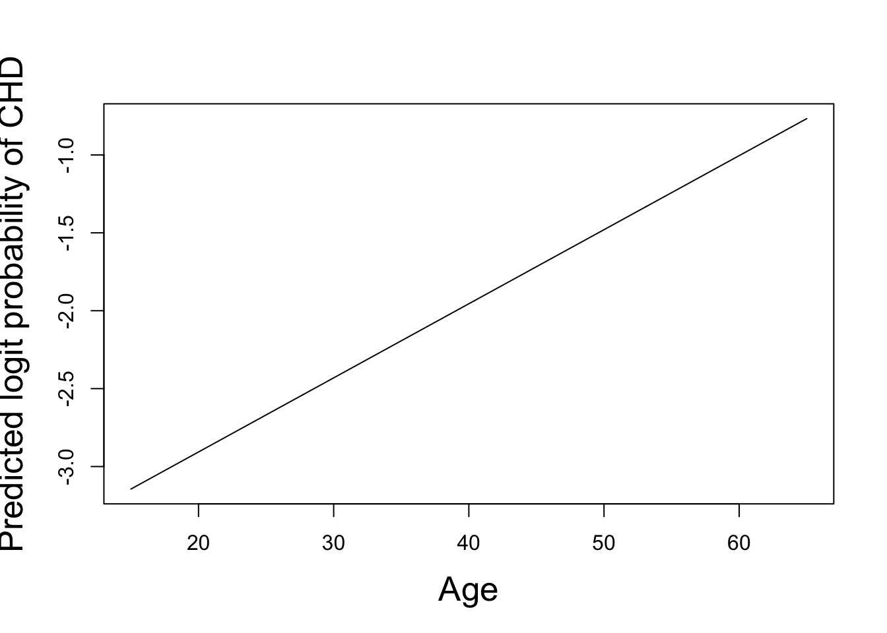
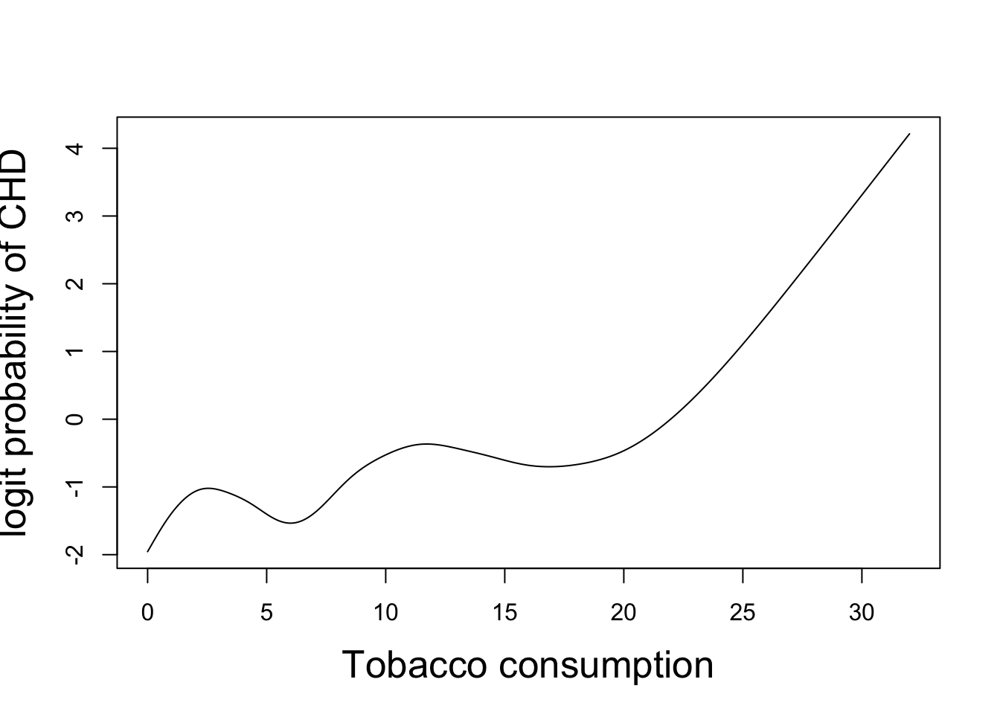

Code
out=gam(y~s(tt,fx=FALSE,k=6,sp=3.5))
out=gam(y~s(tt,fx=FALSE,k=6))So far, we have considered the modelling of a response variable \(y\) in terms of a single response variable \(x\). In particular, we have assumed that the form of this relationship is unknown but can be written as \[ y_i = f(t_i) + \epsilon_i,\qquad \epsilon_i\sim\text{N}(0,\sigma^2) \] where the \(\epsilon_i\) are i.i.d. \(\sim\text{N}(0,\sigma^2)\) and \(f(t)\) is assumed to be smooth. Given knot positions \(\{t_i,\; i=1,\dots,n\}\), we can estimate \(f(t)\) with a smoothing spline \(\hat{f}_\lambda(t)\) for given smoothing parameter \(\lambda\) and, further, we can estimate \(\lambda\) using ordinary or generalised cross validation. This approach is in contrast to simple linear regression where \(y\) is expressed as a linear function of the explanatory variable \(y_i=\alpha + \beta x_i +\epsilon_i\) which enforces a very inflexible relationship.
In this chapter, we generalise the modelling to describe the dependence of the response variable \(y\) on a set of explanatory variables \(\mathbf{x}=(x_1,x_2,\dots, x_p)\) where, conditionally on \(\mathbf{x}\), observation \(y\) has a distribution which is not necessarily normal.
Just as with a generalised linear model, the general additive model relates a continuous or discrete response variable \(Y\) to a set of explanatory variables \(\mathbf{x}=(x_1,x_2,\dots, x_p)\) and, again, the model contains three parts:
Random part: The probability (mass or density) function of \(Y\) is assumed to belong to the two-parameter exponential family of distributions with parameters \(\theta\) and \(\phi\).
Systematic part: This is a non-linear predictor equation: \[ \eta = \sum_{j=1}^p f_j(x_j). \tag{6.1}\]
Link function: This is a one-to-one function providing the link between the predictor equation \(\eta\) and the mean \(\mu = \mbox{E}[Y]\):
\[ \eta = g(\mu), \quad \mbox{and} \quad \mu = g^{-1}(\eta) = h(\eta). \tag{6.2}\]
Here, \(g(\mu)\) is called the link function, and \(h(\eta)\) is called the inverse link function.
The spline theory in the previous chapters has assumed Gaussian (normally distributed) data and the identity link function. For non-Gaussian data and/or a non-identity link function, we need to replace the penalised least-squares criterion of Equation 4.2 with a penalised deviance: \[ R_{\nu}(f, \lambda, \boldsymbol{\beta}) = D({\mathbf y}, f,\boldsymbol{\beta}) + \lambda \, J_\nu(f), \tag{6.3}\] where \(D({\mathbf y}, f,\boldsymbol{\beta})\) is the deviance for the vector \(\mathbf{y}\) of observations modeled by a linear predictor that comprises a spline function \(f(t)\) of order \(\nu\) and possibly also covariate main-effects and interactions. The penalised deviance is then minimised with respect to the spline coefficients \(\mathbf{a}\), \(\mathbf{b}\) and regression parameters \(\boldsymbol{\beta}\), if any. Note that the fitted values for \(y\) are obtained by applying the inverse link function to the linear predictor \(f(t)\), for example the logistic function when the link is logit.
When there are several smooth terms of order \(\nu\) in the model, \({\mathbf f} = \{f_1,\dots,f_m\}\), each may be assigned its own roughness penalty, \(\lambda_h\), and Equation 6.3 becomes \[ R_{\nu}(f_1,\dots,f_m, \lambda_1,\dots, \lambda_m, \boldsymbol{\beta}) = D({\mathbf y}, f_1,\dots,f_m, \boldsymbol{\beta}) + \sum_{h=1}^m \lambda_h J_\nu(f_h) \tag{6.4}\] or we may choose to write this as \[ R_{\nu}({\mathbf f}, {\boldsymbol \lambda}, \boldsymbol{\beta}) = D({\mathbf y}, {\mathbf f}, \boldsymbol{\beta}) + \sum_{h=1}^m \lambda_h J_\nu(f_h). \]
Fitting smoothing splines is straightforward in practice using R. At the beginning of each R session, the first step is to load the package \(\texttt{mgcv}\) which makes available a set of routines written by Simon Wood of the University of Bath.
The main command is \(\texttt{gam}\) which fits a smoothing spline (or, more generally, a general additive model). The \(\texttt{gam}\) function is an extension to the \(\texttt{glm}\) command for fitting generalised linear models, to allow nonparametric functions of explanatory variables.
The syntax of the \(\texttt{gam}\) command is similar to that of \(\texttt{glm}\). Suppose \(\texttt{y}\) is a vector of length containing observations of a dependent variable and is another vector of length containing the times of those observations. Then each of the commands
out=gam(y~s(tt,fx=FALSE,k=6,sp=3.5))
out=gam(y~s(tt,fx=FALSE,k=6))fits a cubic smoothing spline to the dependent variable \(\texttt{y}\). In the first version above, the user explicitly sets the smoothing parameter \(\lambda\) (here denoted \(\texttt{sp}\)) to the value \(3.5\). In the second version, the optimal value of \(\lambda\) is chosen by the routine to minimise the Generalised Cross-Validation criterion, GCV. The notation \(\texttt{s(tt)}\) means a smooth function (a cubic smoothing spline in this setting) of the explanatory variable \(\texttt{tt}\). This notation can be viewed as an extension of the model notation used by the \(\texttt{glm}\) function. Setting \(\texttt{fx=FALSE}\) in function \(\texttt{s}\) specifies that the dimensionality of the spline should be free (see later notes). Parameter \(\texttt{k}\) of function \(\texttt{s}\) specifies the maximum dimensionality of the spline, and should be set according to the problem and data at hand since the default value will not be appropriate in general. For example, if \(\texttt{tt}\) contains only 6 distinct values, then it would be appropriate to set \(\texttt{k=6}\).
In each of the above examples, output from \(\texttt{gam}\) is stored in an object called \(\texttt{out}\). This object contains several components of interest:
Thus, if \(\texttt{gam}\) is called without an explicit choice of \(\texttt{sp}\) (as in the second example above), the output from \(\texttt{gam}\) gives the optimal smoothing parameter value and the corresponding value of the GCV criterion.
To plot a smoothing spline:
For example, suppose \(\texttt{y}\) is a vector of length 20 containing the responses at times \(1,\dots,20\).
# observation times
tt=1:20
# compute a dense set of numbers between 0 and 21: 0,0.1,...,20.9,21.0
ttnew = (0:210)/10
# compute predicted values at each of 0,0.1,...,20.9,21.0
pred=predict.gam(out,newdata=list(tt=ttnew))
# plot the original data
plot(tt,y)
# superimpose the smoothing spline
lines(ttnew,pred)The textbook Elements of Statistical Learning, by Hastie, Tibshirani and Friedman (2nd Edn, 2011), refers to a case–control study of coronary heart disease (CHD) in South Africa.
hr <- read.table("https://richardpmann.com/MATH5824/Datasets/SAheart.txt", sep=",",head=T,row.names=1)| Variable | Description |
|---|---|
| \(\texttt{tobacco}\) | cumulative tobacco consumption (kg) |
| \(\texttt{famhist}\) | family history of heart disease (Present, Absent) |
| \(\texttt{age}\) | age at onset of the disease (years) |
| \(\texttt{chd}\) | case–control status (1 \(\Rightarrow\) CHD; 0 \(\Rightarrow\) no CHD). |
The dependent variable in our models will be \(\texttt{chd}\). We can consider the CHD status of each individual to be the result of an experiment in which the outcome is either CHD (success) or no CHD (failure). Thus we can model these data using the Binomial distribution, where the Binomial index is 1. The \(\texttt{glm}\) function allows such binary (0/1) dependent variables to be specified directly in the model formula, as in the example below, instead of via the usual two-column matrix of successes and failures.
We can examine CHD in relation to tobacco consumption, age and family history of heart disease, with the following R commands:
# make variables in dataframe hr directly available
attach(hr)
# fit a generalised linear model with chd as dependent variable
glm1 = glm(formula='chd~tobacco+age+famhist',family='binomial')
# examine the results
summary(glm1)
Call:
glm(formula = "chd~tobacco+age+famhist", family = "binomial")
Coefficients:
Estimate Std. Error z value Pr(>|z|)
(Intercept) -3.620593 0.444576 -8.144 3.83e-16 ***
tobacco 0.083004 0.025712 3.228 0.00125 **
age 0.048812 0.009452 5.164 2.42e-07 ***
famhistPresent 0.974791 0.220023 4.430 9.41e-06 ***
---
Signif. codes: 0 '***' 0.001 '**' 0.01 '*' 0.05 '.' 0.1 ' ' 1
(Dispersion parameter for binomial family taken to be 1)
Null deviance: 596.11 on 461 degrees of freedom
Residual deviance: 495.39 on 458 degrees of freedom
AIC: 503.39
Number of Fisher Scoring iterations: 4All variables in this model are statistically significant: disease is positively related to the amount of tobacco consumed, age and family history of heart disease. However, this model assumes that the logit of the probability of disease is linearly related to both tobacco consumption and age (logit being the default link for Binomial). We can explore more flexible tobacco-consumption and age trends with the following generalised additive model:
library(mgcv)Loading required package: nlmeThis is mgcv 1.9-0. For overview type 'help("mgcv-package")'.gam1 = gam(chd ~ s(tobacco,k=20)+s(age,k=20)+famhist, family='binomial')
summary.gam(gam1)
Family: binomial
Link function: logit
Formula:
chd ~ s(tobacco, k = 20) + s(age, k = 20) + famhist
Parametric coefficients:
Estimate Std. Error z value Pr(>|z|)
(Intercept) -1.2379 0.1631 -7.592 3.15e-14 ***
famhistPresent 0.9628 0.2233 4.311 1.62e-05 ***
---
Signif. codes: 0 '***' 0.001 '**' 0.01 '*' 0.05 '.' 0.1 ' ' 1
Approximate significance of smooth terms:
edf Ref.df Chi.sq p-value
s(tobacco) 6.080 7.573 17.89 0.0179 *
s(age) 1.002 1.003 24.11 9.53e-07 ***
---
Signif. codes: 0 '***' 0.001 '**' 0.01 '*' 0.05 '.' 0.1 ' ' 1
R-sq.(adj) = 0.212 Deviance explained = 19.1%
UBRE = 0.083268 Scale est. = 1 n = 462Here, the \(\texttt{s}\) function specifies a smooth (cubic spline) dependence. Parameter \(\texttt{k}\) of the \(\texttt{s}\) function specifies the maximum number of degrees of freedom to be allocated to this dependence. Setting \(\texttt{k}\) too small would restrict the set of basis functions used to construct the splines; setting \(\texttt{k}\) too large would increase the computational burden unnecessarily.
These results show that the fitted smoothing spline of the dependence of CHD on tobacco consumption has an effective degrees of freedom (edf) of 6.080, while the dependence on age has edf of only 1.002, implying an almost linear age-dependence because a linear age term would have exactly 1 degree of freedom. See Section Section 5.5 for further details on the calculation of edf.
The significance of each of these smooth terms is given by the \(p\)-value column in the above table. These \(p\)-values are computed from the \(\chi^2\) statistics in the previous column whose approximate degrees of freedom are given in the column headed \(\texttt{Ref.df}\). For example, the \(p\)-value of 0.0196 for \(\texttt{s(tobacco)}\) is computed by referring 17.62 to the \(\chi^2\) distribution on 7.573 degrees of freedom. Note that this compares the above model with the model which omits \(\texttt{tobacco}\) completely.
The following R code was used to plot the fitted smooth functions of age and tobacco consumption:
# for larger axis labels
par(cex.lab=1.6)
# create synthetic data set for ages 15 to 65 having consumed
# no tobacco and with no family history of heart disease
newdat1 = data.frame(age = seq(from=15,to=65,by=0.1),tobacco=0,
famhist="Absent")
# predict logit probability of CHD in these synthetic individuals
pred1 = predict.gam(gam1,newdata=newdat1)
# plot the predicted logit probability of CHD by age in these
# synthetic individuals
plot(newdat1$age,pred1,xlab="Age",
ylab="Predicted logit probability of CHD", type="l")
# create synthetic data set for age 40 having consumed tobacco
# ranging from 0 to 32kg and with no family history of heart disease
newdat2 = data.frame(age = 40,tobacco=seq(from=0,to=32,by=0.1),
famhist="Absent")
# predict logit probability of CHD in these synthetic individuals
pred2 = predict.gam(gam1,newdata=newdat2)
# plot the predicted logit probability of CHD by tobacco in these imaginary individuals
plot(newdat2$tobacco,pred2,xlab="Tobacco consumption",
ylab="logit probability of CHD", type="l")
The predicted dependence of the logit probability of CHD on smooth functions of age and tobacco consumption is shown above. We see an almost linear predicted age-dependence, in agreement with its edf. The curious predicted dependence on tobacco consumption might be explained by other factors correlated with tobacco consumption.